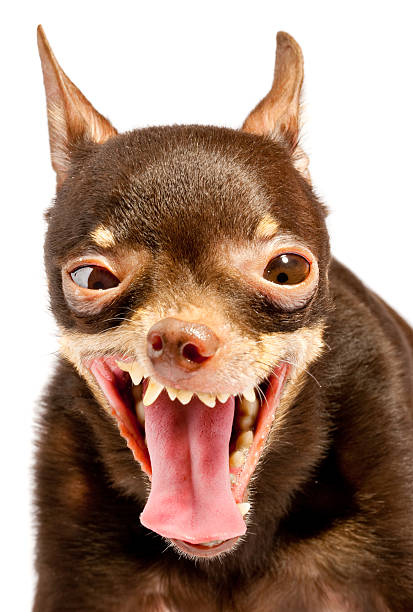
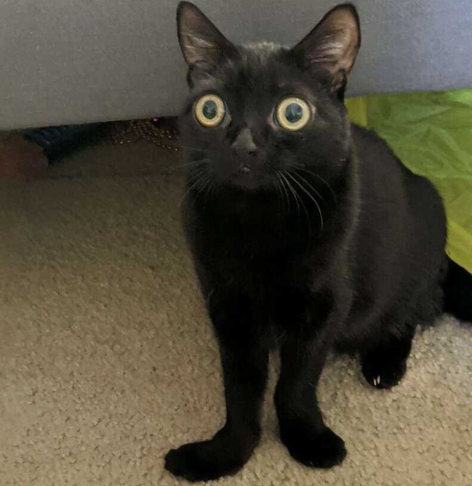

Câinele (Canis lupus familiaris) este una dintre subspeciile lupului cenușiu, fiind un mamifer carnivor din familia canidelor
Pisica de casă, pisica domestică sau mâța (Felis catus sau Felis silvestris catus) este un mamifer din ordinul carnivorelor, familia Felidae, subfamilia Felinae.
